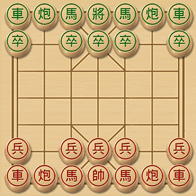

典型的 7x7 迷你象棋棋盘及开局阵型。
迷你象棋 (Mini Xiangqi) 是由日本 Kusumoto Shigenobu 于 1973 年发明的一种流行的象棋变体。它在保留中国象棋核心魅力的同时，大大简化了棋盘和棋子数量，使得游戏节奏更快，更具即时对抗性。
这种独特的 7x7 棋盘设计，去除了河界、士和象，让新手能更快上手，也为经验丰富的玩家提供了全新的策略挑战，是碎片时间享受象棋乐趣的绝佳选择。